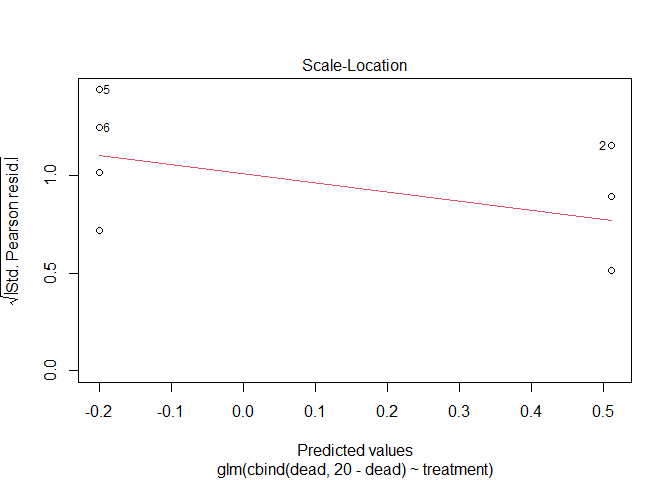
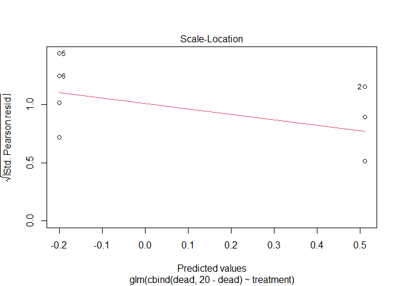
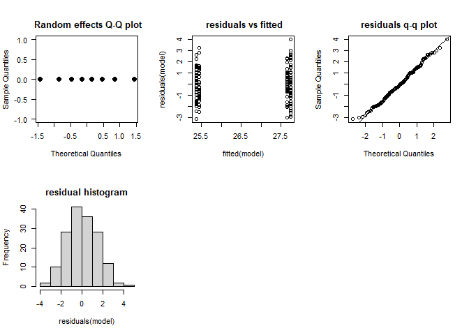

2022 Spring 78002 final answers
jsg
Last compiled on 11 December, 2022 17:13
Instructions! Read this first.
The exam is open note, open course website, open class-related code repositories (mine and those you produced in class). However, you may not get external help ( from other students, directed internet searches, etc.). Please update the statement below to acknowledge these instructions (and that you can use git).
I, INSERT YOUR NAME HERE, promise to not seek external help on the exam. I understand any academic issues will result in a D or F on the exam or in the class and be reported to the Dean of Students.
The exam is due by 12 PM on Monday, 5/16/2022.
As often happens, your excellent statistical advice (provided via the 78001 exam) has led to more calls for help (or just being given the data to anlayze). The below questions build on the earlier exam.
Fear effects
Following your advice, your colleague asked you to help analye the data. As a reminder:
Prey (tadpoles) were housed in tanks (20 per tank). Prey in each tank were exposed to one of two treatments. Predator treatment tanks also housed a dragonfly naiad (a major predator of tadpoles) in a small cylinder with mesh (so water was shared but the predator could not consume the tadpoles). No predator treatment tanks housed an empty cylinder. The colleague measured the length of each tadpole and the number of dead tadpoles in each tank.
1.
Your colleagues tadpole length data is found below. Help them analyze the data.
Data creation for example
fear <- data.frame(treatment = c(rep("predator", 80), rep("no_predator",80)),
container = rep(letters[1:8],each=20))
fear$length <- c(rnorm(80,2,1),rnorm(80,0,1))+25 +
c(rnorm(20,runif(1), 1),rnorm(20,runif(1), 1),
rnorm(20,runif(1), 1),rnorm(20,runif(1), 1),
rnorm(20,runif(1), 1),rnorm(20,runif(1), 1),
rnorm(20,runif(1), 1),rnorm(20,runif(1), 1))
write.csv(fear, "fear_final.csv", row.names = F)fear <- read.csv("https://docs.google.com/spreadsheets/d/e/2PACX-1vSybsT7VO2rv24Rhi_WD5MBB3ww5RKXnqM2BveSP848vnldhPeFigBWPjxcY_WpvB1f1cd1PKQe1v3v/pub?gid=1960907558&single=true&output=csv",
stringsAsFactors = T)Question:
\(H_{0}\) Treatment did not impact tadpole length.
\(H_{A}\) Treatment did impact tadpole length.
Make sure you include
explanation for test you will use
- I will use a linear mixed-effects model. The response (length) is continuous, the explanatory variable (treatment) is categorical, and I need to add a random effect to account for the fact tadpoles within each tank are not fully independent.
results from statistical test
library(lme4)## Warning: package 'lme4' was built under R version 4.2.2## Loading required package: Matrixfear_lmer <- lmer(length~treatment + (1|container), fear)
check_mixed_model <- function (model, model_name = NULL) {
#collection of things you might check for mixed model
par(mfrow = c(2,3))
#not sure what this does with mutliple random effects, so stop with 1 for now
if(length(names(ranef(model))<2)){
qqnorm(ranef(model, drop = T)[[1]], pch = 19, las = 1, cex = 1.4, main= paste(model_name,
"\n Random effects Q-Q plot"))
}
plot(fitted(model),residuals(model), main = paste(model_name,
"\n residuals vs fitted"))
qqnorm(residuals(model), main =paste(model_name,
"\nresiduals q-q plot"))
qqline(residuals(model))
hist(residuals(model), main = paste(model_name,
"\nresidual histogram"))
}
check_mixed_model(fear_lmer)
summary(fear_lmer)## Linear mixed model fit by REML ['lmerMod']
## Formula: length ~ treatment + (1 | container)
## Data: fear
##
## REML criterion at convergence: 577.3
##
## Scaled residuals:
## Min 1Q Median 3Q Max
## -2.48507 -0.63990 0.02658 0.66612 3.07443
##
## Random effects:
## Groups Name Variance Std.Dev.
## container (Intercept) 0.08655 0.2942
## Residual 2.09104 1.4460
## Number of obs: 160, groups: container, 8
##
## Fixed effects:
## Estimate Std. Error t value
## (Intercept) 25.7692 0.2186 117.897
## treatmentpredator 2.0236 0.3091 6.546
##
## Correlation of Fixed Effects:
## (Intr)
## trtmntprdtr -0.707library(car)## Warning: package 'car' was built under R version 4.2.2## Loading required package: carDataAnova(fear_lmer, type = "III")## Analysis of Deviance Table (Type III Wald chisquare tests)
##
## Response: length
## Chisq Df Pr(>Chisq)
## (Intercept) 13899.645 1 < 2.2e-16 ***
## treatment 42.855 1 5.895e-11 ***
## ---
## Signif. codes: 0 '***' 0.001 '**' 0.01 '*' 0.05 '.' 0.1 ' ' 1
- clear explanation of how results relate to your stated hypotheses
Assumptions appear to be met. We note a significant impact of treatment using likelihood (\(\chi^2\))-based tests (\(\chi^2_1\) = 42.86, p < 0.01). Analysis indicates tadpoles actually grew more in the predator treatment.
2.
Create a properly-labelled plot of the data. There are many options here, but make sure you show trends and patterns that match your analysis.
library(Rmisc)## Loading required package: lattice## Loading required package: plyr## Warning: package 'plyr' was built under R version 4.2.2fear_graph <- summarySE(fear, measurevar = "length", groupvars = "treatment")
levels(fear_graph$treatment) = c("Control" , "Predator")
library(ggplot2)## Warning: package 'ggplot2' was built under R version 4.2.2ggplot(fear_graph,
aes_string(x="treatment",
y = "length", color = "treatment",
shape = "treatment")) +
geom_point(size = 2) +
geom_errorbar(aes(ymin = length - ci,
ymax = length + ci), size = 1,
width = .75)+
xlab("Treatment")+
ylab("length (mm)")+
theme(axis.title.x = element_text(face="bold", size=15),
axis.title.y = element_text(face="bold", size=15),
axis.text.y = element_text(size=10),
axis.text.x = element_text(size=10),
legend.text =element_text(size=10),
legend.title = element_text(size=10, face="bold"),
plot.title = element_text(hjust = 0.5, face="bold", size=20))+
ylim(c(0,30))+
guides(shape="none", color= "none")+
ggtitle("Tadpoles grow more in presence of predator")## Warning: `aes_string()` was deprecated in ggplot2
## 3.0.0.
## ℹ Please use tidy evaluation ideoms with
## `aes()`## Warning: Using `size` aesthetic for lines was
## deprecated in ggplot2 3.4.0.
## ℹ Please use `linewidth` instead.3.
Your colleague provided you the data on tadpole mortality too.
Data creation
fear_mortality <- data.frame(treatment = c(rep("predator", 4), rep("no_predator",4)),
container = letters[1:8],
dead = c(rbinom(4, 20, .7), rbinom(4, 20, .5)))
write.csv(fear_mortality, "fear_mortality.csv", row.names = F)fear_mortality <- read.csv("https://docs.google.com/spreadsheets/d/e/2PACX-1vQHLgiC6o2ezJPbEEcaU4Cb7Mz7F1-NMc8t5gMyEIMbLiPSDzslclIgRD51GefIBEl9gH7Fpylfbws5/pub?gid=2111555168&single=true&output=csv", stringsAsFactors = T)Help them analyze the data. Make sure you include
- null hypothesis
- H0: Treatment did not impact tadpole mortality
- alternative hypothesis
- HA: Treatment did impact tadpole mortality
- explanation for test you will use
- I will use a generalized linear model. The response (mortality per tank) consists of success and failures, so I will use a model utilizing a b binomial response. The explanatory variable (treatment) is categorical. I do not need to add a random effect since the data is taken at tank-level
- results from statistical test
fear_mortality## treatment container dead
## 1 predator a 13
## 2 predator b 10
## 3 predator c 14
## 4 predator d 13
## 5 no_predator e 13
## 6 no_predator f 6
## 7 no_predator g 10
## 8 no_predator h 7mortality_glm <- glm(cbind(dead, 20-dead)~treatment, fear_mortality,
family = "binomial")
plot(mortality_glm) 

summary(mortality_glm)##
## Call:
## glm(formula = cbind(dead, 20 - dead) ~ treatment, family = "binomial",
## data = fear_mortality)
##
## Deviance Residuals:
## Min 1Q Median 3Q Max
## -1.3737 -0.9653 0.2320 0.5122 1.7981
##
## Coefficients:
## Estimate Std. Error z value Pr(>|z|)
## (Intercept) -0.2007 0.2247 -0.893 0.3719
## treatmentpredator 0.7115 0.3222 2.208 0.0272 *
## ---
## Signif. codes: 0 '***' 0.001 '**' 0.01 '*' 0.05 '.' 0.1 ' ' 1
##
## (Dispersion parameter for binomial family taken to be 1)
##
## Null deviance: 12.9939 on 7 degrees of freedom
## Residual deviance: 8.0399 on 6 degrees of freedom
## AIC: 39.118
##
## Number of Fisher Scoring iterations: 3Anova(mortality_glm, type= "III")## Analysis of Deviance Table (Type III tests)
##
## Response: cbind(dead, 20 - dead)
## LR Chisq Df Pr(>Chisq)
## treatment 4.9539 1 0.02603 *
## ---
## Signif. codes: 0 '***' 0.001 '**' 0.01 '*' 0.05 '.' 0.1 ' ' 1- clear explanation of how results relate to your stated hypotheses
- *The model appears to fit the data appropriately (residual deviance divided by df is ~ 1). Results indicate a significant impact of treatment on mortality (\(\chi^2_1\) = 4.95, p = 02). Results indicate that tadpoles are more likely to die in predator treatments.
4.
You are also given data from the followup study where length and width were analyzed in response to fear. The setup was the same (4 tanks for each treatment, 20 tadpoles per tank), but this time they recorded length and width of each tadpole. However, they realized at the end of their work they were dealing with a cryptic species!, meaning half the tadpoles belong to species A and half to species B. They are not sure if this matters.
Data is shared below. Help them analyze it.
Data creation
fear_lw <- data.frame(treatment = c(rep("predator", 80), rep("no_predator",80)),
container = rep(letters[1:8],each=20))
fear_lw$length <- c(rnorm(80,2,1),rnorm(80,0,1))+25 +
c(rnorm(20,runif(1), 1),rnorm(20,runif(1), 1),
rnorm(20,runif(1), 1),rnorm(20,runif(1), 1),
rnorm(20,runif(1), 1),rnorm(20,runif(1), 1),
rnorm(20,runif(1), 1),rnorm(20,runif(1), 1))
fear_lw$width <- fear_lw$length*.1 +
c(rnorm(20,runif(1), 1),rnorm(20,runif(1), 1),
rnorm(20,runif(1), 1),rnorm(20,runif(1), 1),
rnorm(20,runif(1), 1),rnorm(20,runif(1), 1),
rnorm(20,runif(1), 1),rnorm(20,runif(1), 1))
fear_lw$species <- factor(sample(c("A", "B"), nrow(fear_lw), prob = c(0.5, 0.5), replace = TRUE))
write.csv(fear_lw, "fear_length_width.csv", row.names = F)fear_lw <- read.csv("https://docs.google.com/spreadsheets/d/e/2PACX-1vSataGluosvnurZ4qOn_UTyHod85nbPTC-V9g5FkMZjKO6CEeRCn6CTAClrMf3Suxo_3kM8k-N2AQVD/pub?gid=1237391888&single=true&output=csv",
stringsAsFactors = T)*Several options exist here (as is not uncommon for multivariate analysis).
Use a manova
- null hypothesis
- H0: There is no impact of treatment on mean outcome
- H0: There is no impact of species on mean outcome
- H0: There is no interaction between species and treatment on mean outcome
- alternative hypothesis
- HA: There is an impact of treatment on mean outcome
- HA: There is an impact of species on mean outcome
- HA: There is an interaction between species and treatment on mean outcome
- explanation for test you will use
- I will use a MANOVA to consider if the means for each variable are impacted by treatment and species while noting potential (and likely) correlation among these outcomes. Note
cor.test(fear_lw$length, fear_lw$width)##
## Pearson's product-moment correlation
##
## data: fear_lw$length and fear_lw$width
## t = 1.6676, df = 158, p-value = 0.09738
## alternative hypothesis: true correlation is not equal to 0
## 95 percent confidence interval:
## -0.02413708 0.28094019
## sample estimates:
## cor
## 0.1315142This suggests the outcomes are related. Note for a MANOVA we could not include random effects as presented in class, so I added as a blocking factor
fear_manova <- manova(cbind(length, width)~species*treatment+container, fear_lw)
summary(fear_manova)## Df Pillai approx F num Df den Df Pr(>F)
## species 1 0.00580 0.434 2 149 0.64852
## treatment 1 0.41314 52.447 2 149 < 2e-16 ***
## container 6 0.14387 1.938 12 300 0.02978 *
## species:treatment 1 0.00350 0.261 2 149 0.77038
## Residuals 150
## ---
## Signif. codes: 0 '***' 0.001 '**' 0.01 '*' 0.05 '.' 0.1 ' ' 1No interaction, so drop
fear_manova <- manova(cbind(length, width)~species+treatment+container, fear_lw)
summary(fear_manova)## Df Pillai approx F num Df den Df Pr(>F)
## species 1 0.00580 0.437 2 150 0.64668
## treatment 1 0.41314 52.799 2 150 < 2e-16 ***
## container 6 0.14355 1.946 12 302 0.02893 *
## Residuals 151
## ---
## Signif. codes: 0 '***' 0.001 '**' 0.01 '*' 0.05 '.' 0.1 ' ' 1summary.aov(fear_manova)## Response length :
## Df Sum Sq Mean Sq F value Pr(>F)
## species 1 1.87 1.871 0.8797 0.3498
## treatment 1 208.93 208.927 98.2256 <2e-16 ***
## container 6 7.30 1.217 0.5722 0.7520
## Residuals 151 321.18 2.127
## ---
## Signif. codes: 0 '***' 0.001 '**' 0.01 '*' 0.05 '.' 0.1 ' ' 1
##
## Response width :
## Df Sum Sq Mean Sq F value Pr(>F)
## species 1 0.033 0.03254 0.0374 0.84696
## treatment 1 0.210 0.21020 0.2414 0.62388
## container 6 16.108 2.68460 3.0837 0.00708 **
## Residuals 151 131.457 0.87057
## ---
## Signif. codes: 0 '***' 0.001 '**' 0.01 '*' 0.05 '.' 0.1 ' ' 1- results from statistical test
- *Results indicate treatment impacts length but not width (this is likely due to the noise from each container (look at data creation)).
Using mixed models
Another option is to code the outcome (length/width) into a mixed model framework using dummy variables (not shown in class) or ignore relationships and do mixed model for each that includes species, eg
fear_lmer_l <- lmer(length~treatment*species + (1|container), fear_lw)## boundary (singular) fit: see help('isSingular')check_mixed_model(fear_lmer_l)
Anova(fear_lmer_l, type = "III")## Analysis of Deviance Table (Type III Wald chisquare tests)
##
## Response: length
## Chisq Df Pr(>Chisq)
## (Intercept) 13158.7017 1 < 2.2e-16 ***
## treatment 49.0898 1 2.445e-12 ***
## species 0.0203 1 0.8866
## treatment:species 0.0135 1 0.9075
## ---
## Signif. codes: 0 '***' 0.001 '**' 0.01 '*' 0.05 '.' 0.1 ' ' 1fear_lmer_l <- lmer(length~treatment+species + (1|container), fear_lw)## boundary (singular) fit: see help('isSingular')check_mixed_model(fear_lmer_l)
Anova(fear_lmer_l, type = "III")## Analysis of Deviance Table (Type III Wald chisquare tests)
##
## Response: length
## Chisq Df Pr(>Chisq)
## (Intercept) 17216.5815 1 <2e-16 ***
## treatment 99.8582 1 <2e-16 ***
## species 0.1019 1 0.7496
## ---
## Signif. codes: 0 '***' 0.001 '**' 0.01 '*' 0.05 '.' 0.1 ' ' 1
fear_lmer_w <- lmer(width~treatment*species + (1|container), fear_lw)
check_mixed_model(fear_lmer_l)
Anova(fear_lmer_l,type = "III")## Analysis of Deviance Table (Type III Wald chisquare tests)
##
## Response: length
## Chisq Df Pr(>Chisq)
## (Intercept) 17216.5815 1 <2e-16 ***
## treatment 99.8582 1 <2e-16 ***
## species 0.1019 1 0.7496
## ---
## Signif. codes: 0 '***' 0.001 '**' 0.01 '*' 0.05 '.' 0.1 ' ' 1fear_lmer_l <- lmer(width~treatment+species + (1|container), fear_lw)
check_mixed_model(fear_lmer_l)
Anova(fear_lmer_l, type = "III")## Analysis of Deviance Table (Type III Wald chisquare tests)
##
## Response: width
## Chisq Df Pr(>Chisq)
## (Intercept) 241.8374 1 <2e-16 ***
## treatment 0.0803 1 0.7768
## species 0.1027 1 0.7486
## ---
## Signif. codes: 0 '***' 0.001 '**' 0.01 '*' 0.05 '.' 0.1 ' ' 1
Recruits
5.
The data on recruits is found below. As a reminder:
The paper focused on predicting the number of new deer (fawns, density per km^2) produced at a nature reserve each season. Potential covariates include adult abundance the previous season (density per km^2), rain the previous year (inches), and winter harshness ( ranked 1-5, least to most severe) were monitored over 8 years.
recruits <- read.csv("https://docs.google.com/spreadsheets/d/e/2PACX-1vT4tICnyqUNSfWo4P3cMQ2DWxqe602IzdodBu5xoPKq43x5-u6vGpSDB_eXTvjFbHKQWwHHK9tkiJdL/pub?gid=1345393421&single=true&output=csv",
stringsAsFactors = T)Analyze the data. Make sure you include
- null hypothesis
- alternative hypothesis
- explanation for test you will use
- results from statistical test
- clear explanation of how results relate to your stated hypotheses
A few options exist here. If we consider this as a chance for multiple regression, we want to identify best subset of variables for explaining recruits. We can do this using bottom up/top-down/nested/other approaches. A few are shown below.
Dredge using AIC
library(MuMIn)## Warning: package 'MuMIn' was built under R version 4.2.2recruits_lm <- lm(recruits ~., recruits)
options(na.action = "na.fail")
write.csv(dredge(recruits_lm), "dredge_output.csv", row.names = F)## Fixed term is "(Intercept)"## Warning in !is.null(modif) && modif %in% type2colname(column.types,
## protectedcoltypes): 'length(x) = 9 > 1' in coercion to 'logical(1)'Results indicate adult alone best explains recruits. WE can check this model
adults_only <- lm(recruits ~ adults, recruits)
plot(adults_only)
summary(adults_only)##
## Call:
## lm(formula = recruits ~ adults, data = recruits)
##
## Residuals:
## Min 1Q Median 3Q Max
## -0.24988 -0.17586 0.04938 0.12611 0.25309
##
## Coefficients:
## Estimate Std. Error t value Pr(>|t|)
## (Intercept) -1.67914 0.63422 -2.648 0.038152 *
## adults 0.49753 0.07453 6.676 0.000547 ***
## ---
## Signif. codes: 0 '***' 0.001 '**' 0.01 '*' 0.05 '.' 0.1 ' ' 1
##
## Residual standard error: 0.2121 on 6 degrees of freedom
## Multiple R-squared: 0.8813, Adjusted R-squared: 0.8616
## F-statistic: 44.56 on 1 and 6 DF, p-value: 0.0005471Obviously some fit issues with aassumptions, but given low sample size there are only so many options here. Note scale of residuals are very small to compared to outcomes.